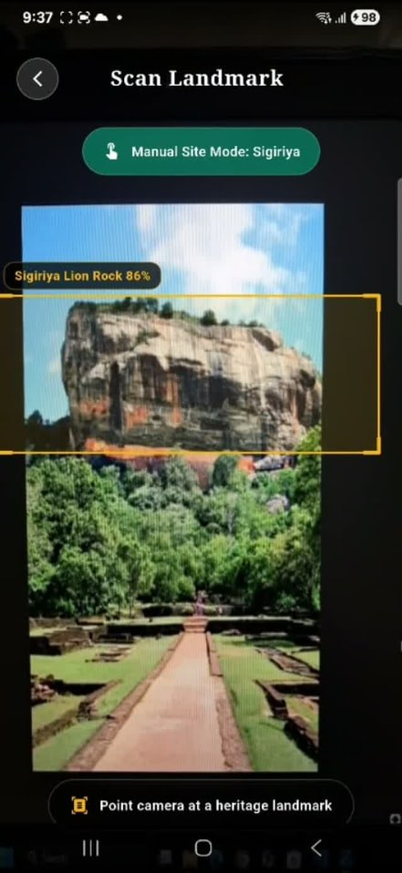
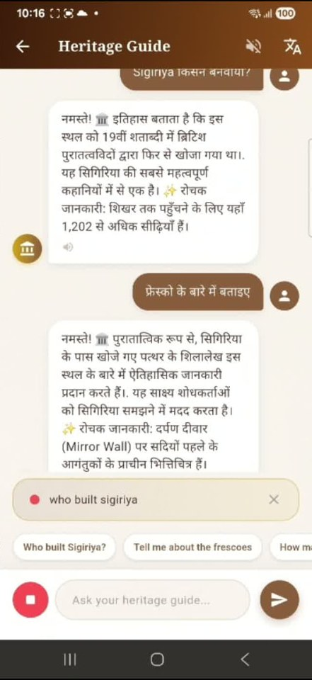

Four smart tools. Zero bars of signal required.
Everything runs on the visitor's phone. Here's what each part of the prototype does.
It knows the Lion's Paw from the Mirror Wall.
A lightweight YOLOv8n model, quantised to INT8 and running as TensorFlow Lite on the phone, recognises individual structures inside a site in real time — and filters out false detections.
- Runs on low-, mid- and high-end phones
- Confidence shown on every detection
- Manual site mode when you already know where you are

The story appears where you're looking.
Names, history and the model's confidence float directly on the camera view — no need to hunt for a board or scroll a web page.
- Landmark cards on the live camera
- Spotted landmarks saved to your visit
- Sign translation with a heritage dictionary

Ask “Who built Sigiriya?” — in your own language.
Verified heritage content is split into passages, turned into embeddings and stored as a local vector index inside the app. Answers come from trusted sources, by text or voice, with no internet.
- Voice input and spoken answers
- Suggested questions to get started
- Content validated by heritage experts

Guidance that works where GPS doesn't.
Surveyed routes store distances, turns and checkpoints. Step counting, compass heading and landmark confirmation guide you between closely spaced structures.
- Distance and direction to the next spot
- Landmark confirms you're on track
- Offline map with viewpoints & wildlife warnings

Proven at Sigiriya. Repeatable at every site.
The same nine-step process turns any heritage site into an offline site pack — at about LKR 1,000,000 per new site.
- 1Site survey & heritage authority permission
- 2Landmark image dataset collection
- 3Annotation & YOLOv8n model training
- 4INT8 quantisation & on-device testing
- 5Content writing, expert validation & translation
- 6Heritage knowledge base & offline vector index
- 7Route survey & visual navigation mapping
- 8Offline site pack build & app store release
- 9Visitor experience & feedback loop
Questions visitors ask us.
Do I need internet at the site?
No. Download the site pack over Wi-Fi at home or at your hotel. Recognition, AR, the assistant and navigation then work fully offline.
Does the app send my camera images anywhere?
No. All processing happens on your phone. Camera frames and your questions never leave the device.
Will it replace tour guides?
No — HeritageAR complements human guides, heritage staff and teachers. Many visitors use it alongside a guide or before a visit.
Which phones are supported?
Android and iOS smartphones. We test model speed and accuracy on low-, mid- and high-end devices before every release.